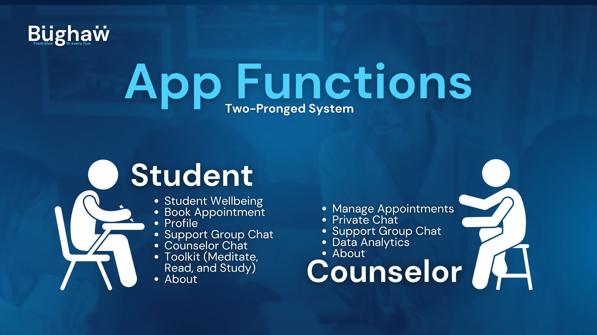

Blue Hacks 2024
Blue Hacks 2024

Overview
With a theme of developing applications to address mental health, our team prototyped Bughaw, a school mental health digital management system. Bughaw is focused to respond to students’ mental health needs promptly through an optimized counseling appointment system, empower counselors to be more data-driven in guiding and intervening with students’ mental wellness, and foster available, accessible, and safe spaces for students.
Our team won second place by besting more than 10 teams from various universities in the country. Notably, we are the only team comprised of Applied Mathematics majors, competing with Computer Science and Engineering majors.
Key Features
Bughaw has a two-pronged function, one catering to students’ needs/ while the other capacitates guidance counselors toward more effective and appropriate interventions.

Student Users’ Features
Student Wellbeing: Serves as a regular mental wellbeing check-in system// composed of daily mood surveys, weekly General Health Questionnaire surveys, and monthly Sense of Coherence surveys that altogether holistically assess the status of their mental health, concurrent with Biro et al. (2019)’s study.
Student’s Profile: Allows students to record their own personal information by seeing data visualizations of their past survey responses, such as in the form of graphs
Student Toolkit: Includes several mental health self-help tools enabling students to both cope with stress and other mental health concerns as well as build a better, more balanced lifestyle for them.

Read: A page connected to different, real-time mental health-related websites providing relevant tips and advice regarding mental health concerns such as PsychologyToday, HelpGuide, and Science Daily into one-stop guiding students to be more informed about such mental health articles.
Set an Appointment: An efficient, go-to, guided scheduler that allows students to swiftly book an appointment with a school’s guidance counselor, with a unique anonymous option whether they choose to. Here, students can take a quick look at the counselor’s monthly calendar of appointments to proactively determine available slots for them, as well as a request form that caters to their anonymity.
Support Group and Counselor Chat: In recognition of the capacities of other individuals besides the counselors to help out and support those who urgently need it, we set up an immediate, anonymous, username-based group chats having at most twenty students each, directly moderated by a counselor. Through this sense of anonymity, students can freely share and open up their feelings and thoughts to a safe and easily accessible space.

Guidance Counselor Users’ Features
- Manage Appointment: Parallel to the appointment scheduler from the Students’ End, this tab features an appointment calendar that allows the guidance counselor to keep track of both their past and future appointments through either a list-view or an actual calendar configuration for a more efficient appointment process.

Private and Support Group Chat: Mirroring the group chat feature from the students’ end, this also focuses on the counselors acting as moderators for the group chats to intervene whenever necessary, or a falsified/malicious information is being shared by another student in the group.
Data Analytics: Connected to the student dashboard surveys, this, on the counselors end, aggregates the survey results of all the students stratified based on categorical metrics, like time period (e.g., Weekly, Monthly, etc.), which eventually helps for more informed program and policy making.

Methodology
We developed this app mainly by referring to the documentation of Streamlit, an open-source Python package for developing web apps (Snowflake Inc. 2024). For the Mental Health Feed, we used the publicly available code provided by Muralidhar (2023) for scraping articles from the RSS feeds of websites. Also, we referred to Alibudbud (2021) for two simple surveys that would holistically assess a student’s mental health status.
Links
Bughaw is deployed and is accessible at:
Related links:
About the Contest
Blue Hacks is a two-day hackathon organized by the Computer Society of the Ateneo (CompSAt) that provides an opportunity for undergraduate college students nationwide to apply their skills in designing and developing applications that will address relevant matters in society. This year, the theme was focused on mental health.